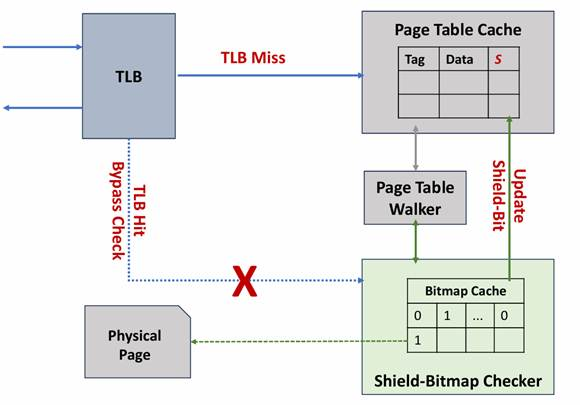

在香山中，什么是香山bitmap 隔离模块，如何验证？
Location: MMU-L2TLB-Bitmap
在香山中，什么是香山bitmap 隔离模块，如何验证？
Location: MMU-L2TLB-Bitmap
本节将介绍 bitmap 的一些基础知识，有助于理解为什么我们需要 bitmap，本节包含：
| 缩写 | 全名 | 含义 |
|---|---|---|
| TCB | Trusted Computing Base | 可信计算基，负责底层硬件的安全可信操作 |
| TEE | Trusted Execution Environment | 可信执行环境 |
| MMU | Memory Management Unit | 内存管理单元 |
| RDSM | Root Domain Security Mananger | 根域权限管理器 |
| C-SDSM | Confidencial Supervisor Domain Security Manager | 可信监督域 权限管理器 |
| APLIC | advanced platform level interrupt controller | 平台级中断控制器 |
| LLC | Last Lavel Cache | 末级缓存 |
| DMA | Direct Memory Access | 直接内存访问 |
| CVM | Confidencial Virtual Machine | 可信虚拟机 |
| TLB | Translation Lookaside Buffer | 页表缓存 |
| MBMC | machine level bitmap check | bitmap CSR 特殊状态寄存器 |
| BMA | Bitmap Adress | Shield Bitmap 专属内存区域基地址 |
| CMODE | Confidencial Mode | 开启bitmap后当前模式是否是可信 |
| BME | Bitmap Enable | 是否开启 Bitmap |
| PTW | Page Table Walker | 页表遍历器 |
| HPTW | Hypervisor PTW | 监督域页表遍历器 |
| LLPTW | Last Level PTW | 末级页表遍历器 |
自计算机问世以来，数据安全始终是至关重要的议题。在个人计算机时代，数据安全主要集中在单机硬盘等存储设备的安全性上。随着互联网时代的到来，数据安全的范畴扩展到了计算机之间数据传输的安全性，促使了安全传输协议的设计与发展。如今，在云计算时代，用户的大量数据被存储和处理在云端。在云环境中存储、共享和计算的数据面临着多重安全威胁。在云计算环境下，不同类型的负载面临各自的威胁模型包括但不限于：
计算型负载：恶意软件可能侵入操作系统或固件，攻击 CPU 和内存资源，导致数据泄露或系统性能下降。
内存型负载：恶意软件或进程可能试图访问内存型负载使用的内存区域，导致数据泄露或篡改。
存储型负载：存储设备及其 DMA 功能可能被攻击者利用，直接访问或篡改存储设备内存，绕过传统安全检查。
网络型负载：网络攻击可能利用网络接口控制器（NIC）等网络设备漏洞入侵系统，通过 DMA 功能访问或篡改内存中的敏感数据。

| 类别 | 安全准则 | 描述 |
|---|---|---|
| 内存分配 | 动态分配安全/非安全内存的能力 | 安全内存应根据需求动态分配或释放。 |
| 内存机密性 | 内存隔离 | 防止非可信计算基（non-TCB）组件读取可信执行环境（TEE）的内存。 |
| 抵御软件攻击的内存完整性 | 防止软件攻击（如内存重映射、别名攻击、重放攻击、数据破坏等）。 | |
| 共享内存 | TEE控制与非TCB组件的数据共享 | 防止非TCB代码在未经TEE同意的情况下泄露信息。 |
| TEE控制与其他TEE的数据共DUT 享 | 支持TEE之间安全共享内存的能力。 | |
| I/O保护 | 防止非TCB设备通过DMA访问TEE内存 | 禁止未被TCB接纳的外设设备访问TEE内存。 |
| 来自TCB内设备的可信I/O | 通过准入控制将设备绑定到TEE。 |
针对日益复杂的负载的安全威胁，香山轻量动态隔离模型为经典负载机密虚拟机和容器设计了一种动态隔离机制，用来保护正在使用中的数据的机密性和完整性。依据不同的应用场景，将负载从安全的维度进行划分，分为安全敏感型负载和非安全敏感型负载。
安全敏感型负载需要运行在可信执行环境下，用来保护正在使用中数据和代码的机密性和完整性。非安全敏感型负载对数据没有安全性保护需求，执行在开放的执行环境下，保证执行的效率。
基于bitmap的安全隔离的防御机制，其核心原理是通过可信根在软件层面的标记（Shield-bit）来隔离和保护敏感工作负载（Sensitive Workloads）与普通工作负载（Normal Workloads），从而增强系统的安全性。以下是其防御原理的详细描述：
工作负载分类：系统将工作负载分为两类：
敏感工作负载（Sensitive Workloads）：需要高安全级别的任务，如机密虚拟机、安全容器的任务（隐私数据的访问、处理）等。
普通工作负载（Normal Workloads）：常规任务，代表系统中普通的应用程序或进程，安全要求较低。
Shield-bit 标记：通过 “Shield-bit”（每比特代表 4KB）对敏感工作负载使用的资源进行标记，依据需此标记动态调整资源访问权限：
Shield-bit = 1 表示安全敏感资源
Shield-bit = 0 表示非安全敏感资源
资源池划分：图中显示资源池中包含混合的敏感和普通工作负载，但通过 Shield-bit 实现逻辑隔离。
资源类型保护：敏感工作负载访问特定资源（如内存、IO设备、中断等）时，Shield-bit 会触发保护机制，防止普通工作负载或恶意程序越权访问。例如：
内存隔离：敏感数据的内存区域仅对标记为敏感的工作负载可访问。
设备与中断保护：关键外设或中断仅允许敏感工作负载调用。
Bypass Shield-bit：在单向隔离的情况下（仅对普通负载的资源访问作限制），安全敏感负载可绕过 Shield-bit 的机制直接访问资源提升性能。
防止横向渗透：攻击者通过普通工作负载漏洞无法访问敏感资源。
最小权限原则：每个工作负载仅能访问其必需的资源，降低攻击面。
动态安全调整：根据工作负载的敏感程度动态切换保护状态。
硬件支持：依赖内存管理单元（MMU）的扩展功能。
软件协同：由可信计算基负责标记管理和资源调度。


A. 启动
系统初始化，加载固件（Firmware TCB）和可信执行环境（TEE TCB）。
开启Bitmap安全检测功能。
B. 配置
设定安全策略，例如定义受保护资源（内存、IO、中断等）访问权限。
TEE-TCB 依据应用需求配置不同资源的安全/非安全属性。
C. 检测
硬件监控访问行为，识别异常或非法访问请求。
通过 Bitmap 或其他机制标记不信任的访问行为。
D. 故障处理
当检测到违规操作（如未授权的内存访问）时，触发安全机制。
支持对所有地址映射类资源（内存、I/O、中断）的动态隔离。
资源隔离支持按需分配的，而非静态划分（区别于PMP）。
使用位图（Bitmap）标记资源的信任状态，快速过滤不信任的访问请求。
灵活性
动态隔离允许根据运行时需求调整安全策略，适应不同场景。
细粒度控制
支持多种资源类型（内存、I/O、中断）的精细化权限管理。
轻量级检测
通过Bitmap等高效数据结构实现低开销的安全监控。

根据应用场景和安全需求，将负载分为安全敏感型负载和非安全敏感型负载：
安全敏感型负载：需要在可信执行环境中运行，以保护数据和代码的机密性和完整性。
非安全敏感型负载：可以在开放的执行环境中运行，主要关注执行效率。
定义隔离属性：为不同类型负载设置隔离属性，包括单向隔离和双向隔离。
单向隔离：允许安全敏感型负载访问非安全敏感型负载的资源，但不允许反向访问。
双向隔离：安全敏感型负载和非安全敏感型负载之间互相不能访问对方的资源。
划分物理内存资源：将物理内存划分为不同的资源池以支持不同负载的隔离需求。
安全资源池：分配给安全敏感型负载。
非安全资源池：分配给非安全敏感型负载。
设置内存页安全状态：使用Bitmap数据结构标记每个物理内存页的安全状态。
安全页：标记为1，表示该页属于安全资源池。
非安全页：标记为0，表示该页属于非安全资源池。
按需分配内存：根据负载的启动和运行时需求，动态分配相应的内存资源。
安全敏感型负载：从安全资源池分配内存，并确保其访问受限于安全页。
非安全敏感型负载：从非安全资源池分配内存，允许其访问非安全页。
判断隔离类型：判断当前负载是否需要单向隔离或者双向隔离。
单向隔离：仅对非安全敏感型负载进行安全性检测，确保其不访问安全资源。
双向隔离：对所有负载类型进行隔离检测，确保不同负载之间互不干扰。
执行访问控制检查：
对于单向隔离情况，检查非安全敏感型负载是否试图访问安全资源。
对于双向隔离情况，检查所有负载类型是否试图越界访问其他类型的资源。
释放不再使用的资源：负载执行完毕后，其占用的内存资源被回收并返回到相应的资源池中，以便后续其他负载的使用。

Shield-XS用于普通虚拟机和机密虚拟机的隔离。在机密虚拟机（Confidential VM， CVM）环境中，bitmap 用于标记和隔离安全内存区域。
普通虚拟机在访问内存时，硬件通过 bitmap 检查机制确保其只能访问被授权的内存区域，从而实现虚拟机之间的内存隔离。
注：机密虚拟机之间的隔离通过MMU 完成，不需要经过Bitmap 的检查机制。
CVM Bitmap 的资源的标记和分配由C-SDSM (Confidential Supervisor Domain Security Manager) 完成，Hypervisor 和 CVM 通过TEECall 和 TEEResume 进行安全世界的交互。

TEECall
TEEResume

上图显示了bitmap在容器中的应用场景。安全容器和普通容器都位于可信计算基的保护范围内。在安全容器中运行的应用程序可能包含敏感数据或关键业务逻辑。为了防止这些数据被普通容器或恶意软件访问，采用通过 bitmap 机制进行隔离。
Bitmap 数据结构用于标记哪些物理页属于安全容器的存储空间，通过将对应该容器内存区域的位图数据写为1，确保普通容器无法访问这些存储空间。只有安全容器内的应用程可以访问这些被标记为安全的内存页。
普通容器中的应用程序可能来自不可信的来源。通过 bitmap 机制，普通容器的内存访问被限制在非安全内存区域。任何试图访问安全内存的请求都会被硬件拦截，并触发Access Fault。
在上述场景的具体的实施细节中，软件模块负责Bitmap管理和配置 ， 硬件机制负责Bitmap检查和同步。
本节介绍bitmap的总体设计，不包括具体的硬件实现，只解释概念，包含：
| 寄存器名称 | MBMC（Machine BitMap Control） |
|---|---|
| 特权模式 | 机器模式 |
| 寄存器编号 | 0xBC2 |
| 读写权限 | 可读可写 |
| 功能描述 | 用来控制Shield-bitmap 的使能、同步、Shield-XS Bitmap 基地址等 |
| 地址 | 字段 | 描述 |
|---|---|---|
| [61:3] | BMA (Bitmap Address) | Shield-XS Bitmap 基地址指定 Bitmap 数据结构在物理内存中的起始地址。 |
| 2 | CMODE (Current Mode) | 表明当前执行模式CMODE = 1，表示安全模式CMODE = 0, 表示非安全模式。 |
| 1 | BCLEAR (Bitmap Clear) | Shield-XS Bitmap 同步位BCLEAR = 1，表示刷新所有Shield-bit 副本。 注：实际使用过程，可结合HFence 指令 |
| 0 | BME (Bitmap Enable) | Shield-XS 使能位当 BME 置为 1 时，启用 Bitmap 功能。一旦启用，无法关闭，也无法修改 Bitmap 的基地址。 |

上图为Shield-XS Bitmap的数据结构，所有的Shield-XS Bitmap权限数据都被存放在一块连续的物理内存区域中。其中基地址是存放Shield-XS Bitmap 数据结构的内存区域的起始物理地址。这个地址可以通过MBMC寄存器中的 BMA字段进行配置。
Shield-XS Bitmap 数据结构的大小取决于系统内存的大小。每个4k物理页对应一个比特位。一个4k页对应的权限根据其物理地址存放在Shield-XS Bitmap 数据结构中，其位置可以通过基地址加上该4k页物理地址的偏移量计算得出。
当BME =1 （开启bitmap） 且CMODE= 0 （当前模式处于 非安全模式）时，会进行bitmap检查。当bitmap 检查 当前4k页 bitmap属性 为1（ 安全页面）时，会触发访问错误（access fault）。
当BME =1 （开启bitmap） 且CMODE= 1 （当前模式处于 安全模式）。无论安全还是非安全页面，当前状态都允许访问，因此无需进行bitmap检查。
当BME =0 （关闭bitmap）无需进行bitmap检查。
当访问一个物理地址 (PA) 时，硬件通过查找 Shield-XS Bitmap 数据结构中对应的位置来确定该页是否具有安全属性。
查找安全属性的物理地址计算公式如下：
即 Shield-Bitmap 访问地址 = MBMC.BMA + PA[ XLEN-1 : 12 + log2(XLEN/8) ]
随后用选出对应该 4KB 页的权限。如果对应比特位为 1 ，则表示该页具有安全属性，只能被安全敏感型负载访问；如果为 0 ，则表示该页不具有安全属性，可以被非安全敏感型负载访问。

开启Shield-XS 隔离之后，CPU 内部发起的任何一笔访存操作，都需要对标记安全属性的存储空间发起访问，从内存中获取安全属性的延迟过长，使得系统的性能变差。
为了Shield-XS 隔离带来的性能损失，利用了程序的局部性，增加了Shield-Bitmap Cache, 当任何一笔访存需要获取安全属性时，优先从Shield-Bitmap Cache 中读取，只有Shield-Bitmap Cache Miss时，才会发起访存请求。

bitmap和MMU-L2TLB耦合，会在虚拟化两阶段地址走表翻译完成后才进行隔离检查。如果bitmap检查没有通过，就向MMU-L1TLB 发送af。因此对L1TLB以及其上面的模块来说，bitmap是透明的。所以，在进一步介绍前，需要先了解MMU处理虚拟化两阶段地址的流程。
1. VAPT (Virtual Address Protection and Translation)
作用 ：管理客户机虚拟地址（GVA）到客户机物理地址（GPA）的第一阶段翻译（VS-stage）。
| 字段名 | 位宽 | 描述 |
|---|---|---|
| MODE | 4 | 页表模式：
|
| ASID | 16 | 地址空间标识符（Address Space ID），隔离不同客户机的地址空间 |
| PPN | 44 | 物理页号（Physical Page Number），指向VS-stage页表的根页表地址 |
| RESERVED | 8 | 保留位，必须写0 |
| G | 1 | 全局映射标志（Global bit），若为1则忽略ASID匹配 |
2. SVAPT (Supervisor Virtual Address Protection and Translation)
作用 ：在Hypervisor模式下管理宿主机虚拟地址（HVA）到宿主机物理地址（HPA）的翻译（HS-stage）。
| 字段名 | 位宽 | 描述 |
|---|---|---|
| MODE | 4 | 页表模式：
|
| ASID | 16 | 宿主机地址空间标识符 |
| PPN | 44 | 指向HS-stage页表的根页表地址 |
| V | 1 | 虚拟化启用标志：
|
| RESERVED | 7 | 保留位 |
3. HGAPT (Hypervisor Guest Address Protection and Translation)
作用 ：控制客户机物理地址（GPA）到宿主机物理地址（HPA）的第二阶段翻译（G-stage）。
| 字段名 | 位宽 | 描述 |
|---|---|---|
| MODE | 4 | G-stage页表模式：
|
| VMID | 14 | 虚拟机标识符（Virtual Machine ID），隔离不同虚拟机的G-stage页表 |
| PPN | 44 | 指向G-stage页表的根页表地址 |
| GST | 1 | 客户机软件TLB失效指令使能：
|
| RESERVED | 5 | 保留位 |
关键差异总结
| 寄存器 | 控制阶段 | 核心功能 | 特权级 |
|---|---|---|---|
| VAPT | VS-stage | GVA→GPA翻译（客户机视角） | VS-mode |
| SVAPT | HS-stage | HVA→HPA翻译（宿主机视角） | HS-mode |
| HGAPT | G-stage | GPA→HPA翻译（硬件辅助虚拟化） | M-mode/HS-mode |
第一阶段：VS-stage (GVA → GPA)
| VPN部分 | VS-stage页表 | 依赖的G-stage页表 | 说明 |
|---|---|---|---|
| VPN[3] | VS-L3 | 通过hgatp访问G-L3 | 最高级页表，需G-stage辅助查询 |
| VPN[2] | VS-L2 | 通过hgatp访问G-L2/G-L1/G-L0 | 中间级页表，需G-stage多级支持 |
| VPN[1] | VS-L1 | 通过hgatp访问G-L1/G-L0 | 次末级页表 |
| VPN[0] | VS-L0 | 通过hgatp访问G-L0 | 最后级页表，直接指向GPA |
第二阶段：G-stage (GPA → HPA)
| 页表层级 | 作用 |
|---|---|
| G-L3 | 顶级页表，由hgatp寄存器指向 |
| G-L2 | 中间级页表 |
| G-L1 | 次末级页表 |
| G-L0 | 最后级页表，与offset拼接生成HPA |


1. L1TLB向L2TLB发送请求
非两阶段翻译请求：
两阶段地址翻译请求：
page Cache 访问流程：

2. PTW和LLPTW的第二阶段翻译
PTW和LLPTW发送的第二阶段翻译请求会先发送到PageCache查询：
3. PageTableWalker (PTW) 处理
PTW同时只能处理一个请求，进行HardwarePageTableWalk：
PTW 处理流程

4. HypervisorPageTableWalker (HPTW) 处理

5. 内存访问流程

6. 页表压缩机制
7.异常处理
8. 关键限制
如前文所述， bitmap和MMU耦合。现在将介绍增加了bitmap后的MMU地址翻译流程。

从 客户虚拟地址 到 主机物理地址 的转换过程，同时涉及 安全属性检查 和 Shield-Bitmap高速缓存访问。以下是详细步骤：
客户虚拟地址（Guest Virtual Address）: 流程开始于计算单元（如CPU）使用客户虚拟地址发出内存访问请求。
访问一级快表（L1TLB Lookup）: 首先查询一级快表（L1TLB），检查是否已缓存该地址的映射。只有经历过bitmap检查才会出现在L1TLB Cache中。因此和L2TLB Cache不同，L1TLB Cache 不会存储bitmap检查位。
一级快表缓存命中？
是 → 直接从L1TLB Cache获取主机物理地址（Host Physical Address）。
否 → 进入下一级查询（访问二级快表）。
访问二级快表（L2TLB Lookup）: 如果一级快表未命中，继续查询二级快表（L2TLB），检查二级快表是否有对应的映射。L2TLB Cache 存储安全允许位（cf）表示 是否经过bitmap 检查。
二级快表缓存命中？
cf 和 L2TLB 页表项均命中 → 获取主机物理地址，并回填一级快表（更新L1TLB）。
L2TLB 页表项命中，bitmap cf 未设→ 发送请求至bitmap，进行权限检查。
否 → 触发 页表遍历（Page Table Walker），从内存中加载页表映射关系，随后进行bitmap检查。
进行页表遍历：从内存中加载页表映射关系
主机虚拟地址 → 主机物理地址转换：通过页表遍历获取主机物理地址（Host Physical Address）。
安全性检查允许访问（Security Check）： 对物理地址进行 安全属性检查。如果检查失败，可能触发访问错误（Access Fault）。
访问（安全属性高速缓存）Shield-Bitmap Cache：查询Shield-Bitmap Cache是否已缓存目标数据。
Shield-Bitmap Cache 命中？
是 → 返回数据。
否 → 继续访问主存Shield-Bitmap 专属内存区域，读取权限。
访存请求合并（Shield-Bitmap Memory Request Merging）：如果多个请求访问同一地址，可能合并访存请求以提高效率。
访问错误：如果访问不被允许，触发访问错误。
RISC-V 特权手册规定的同步异常处理优先级

优先级处理如下：
| 序号 | 描述 | 触发异常 |
|---|---|---|
| 1 | PTE.V == Invalid | Page fault |
| 2 | PTE.V == Invalid && Page Table Walker (PMP || Bitmap) Check Fail |
Access Fault |
| 3 | PTE.V valid && PTE.Permission (R/W/X) Check Fail | Page fault |
| 4 | PTE.V valid && PMP Check Fail | Access Fault |
在硬件实现层面，Bitmap 机制由两个关键组件构成，即 Bitmap Checker 和 Bitmap Cache。其中，Checker 的职责是读取内存中的权限信息，以确保内存访问的安全性；而 Cache 则旨在加速查找过程，提升整体性能。需要指出的是，当前实现仅支持单向隔离功能。 这意味着在实际应用场景中，它能够有效地防止非安全敏感型负载对安全内存区域的非法访问，但尚未支持更高阶的双向隔离功能，即安全与非安全负载之间的互相访问限制。

上图展示了一次虚拟地址到物理地址转换过程中如何结合Shield-Bitmap安全机制进行访问权限检查。 以及bitmap cache hit 和miss的不同处理。在L1TLB hit时，无需进行bitmap检查，因为L1TLB只会存储bitmap 检查为 allow的项。 如果miss，在L2TLB的page cache中查找，如果页表项和对应的bitmap 均未命中，则先进行查表，后进行bitmap检查并返回结果。如果页表项命中但未进行过bitmap 检查，则只进行bitmap检查。 如果都命中，则直接返回。
Bitmap checker 的作用是将来自外部（ptw/lptw/hptw）的请求发送至cache，并根据是否命中进行内存访问查权限。最后将cache返回的或者内存访问得到的权限发送回请求源。
此外，bitmap（walker）支持non blocking 特性，每一个请求来源都有FSM负责录入请求进行处理。但是一次只能有一个fsm进行cache访问。
为了保持non blocking，有8个独立的状态机（entries）并行运行。每个 entry 维护独立的状态和数据处理。当有请求进入时，从下到上依次将fsm填满，由于总共就8个请求来源，因此不会出现无空闲fsm可用的情况。
当entry的PA重复时，仅有一个fsm会进行一次查cache 或者访问memory，其余重复fsm项的状态会被部分跳过。重复表示PA的tag位[47:18] 一致。
| PA | |||
|---|---|---|---|
| 段 | tag | Bitmap offset | Page offset |
| 位 | [47:18] | [17:12] | [11:0] |

| 状态 | 说明 |
|---|---|
| state_idle | 标明该fsm状态为空，可以录入新请求 当io.req.fire时，切换到新状态 转换条件：
|
| state_addr_check | 进行pmp检查 转换条件：
|
| state_cache_req | 将cachereq拉高，fire后→ state_cache_resp |
| state_cache_resp | Cache resp fire后更新：
|
| state_mem_req | 拉高valid 并等待，mem req fire时，将所有重复项目的id跟新为本fsm id，并将所有重复和本机 state 设置为mem wait |
| state_mem_waiting | Fire时→state_mem_out，并将所有的符合id项目内值全部跟新为mem返回值 |
| state_mem_out | 拉高 resp valid ，fire时→ state_idle |
| 信号 | 位宽 | 描述 |
|---|---|---|
| Io.mem | 内存访问相关信号 | |
| io.mem.resp.bits.id | 4 | memory 响应返回的 ID(需为bitmap编号) |
| io.mem.resp.bits.value | 512 | memory 返回的 bitmap 数据块 |
| io.mem.req_mask | 20 | Memory 请求屏蔽位 |
| io.mem.req.bits.addr | 56 | memory 请求的 bitmap 数据地址 |
| io.mem.req.bits.id | 4 | memory 请求的编号(恒定为bitmap编号) |
| io.mem.req.bits.hptw_bypassed | 1 | （和bitmap 模块内部无关） |
| Io.Req | 请求信号 | |
| io.req.bits.bmppn | 27 | 被检查的物理页号 PPN |
| io.req.bits.id | 4 | 请求编号，用于标识请求来源（和bitmap 模块内部无关） |
| io.req.bits.vpn | 27 | 对应虚拟页号VPN，用于唤醒pagecache（和bitmap 模块内部无关） |
| io.req.bits.level | 2 | 所查询页表的级别信息（0/1/2），用于唤醒pagecache（和bitmap 模块内部无关） |
| io.req.bits.way_info | 8 | TLB way 编号用于唤醒pagecache（和bitmap 模块内部无关） |
| io.req.bits.hptw_bypassed | 1 | 用于唤醒pagecache（和bitmap 模块内部无关） |
| Io.resp | 返回结果 | |
| io.resp.bits.cf | 1 | 检查权限是否允许访问 |
| io.resp.bits.cfs | 8 | 相邻8个（3bit地址空间）的权限 |
| io.resp.bits.id | 4 | 响应对应的请求id（和bitmap 模块内部无关） |
| Io.pmp | Pmp查 | |
| io.pmp.req.bits.addr | 56 | 进行PMP检查的物理地址 |
| io.pmp.req.bits.cmd | 2 | 读/写权限请求类型（恒定为读） |
| io.pmp.req.bits.size | 3 | 请求访问大小（恒定） |
| io.pmp.resp.ld | 1 | PMP Load 权限检查结果 |
| io.pmp.resp.mmio | 1 | PMP MMIO 检查结果 |
| Io.wakeup | Resp时且非hptw bypassed 进行重填pagecache | |
| io.wakeup.bits.setIndex | 4 | 唤醒用的setIndex（和bitmap 模块内部无关） |
| io.wakeup.bits.tag | 4 | 唤醒tag（VPN高位）（和bitmap 模块内部无关） |
| io.wakeup.bits.isSp | 1 | 是否为superpage（和bitmap 模块内部无关） |
| io.wakeup.bits.way_info | 8 | TLB对应的way 信息（和bitmap 模块内部无关） |
| io.wakeup.bits.pte_index | 6 | PTE 在段页表中的索引位置（和bitmap 模块内部无关） |
| io.wakeup.bits.check_success | 1 | 是否 bitmap 检查通过 |
| Refill | ||
| io.refill.bits.data | 64 | 要写入cache 的bitmap 数据 |
| CSR | ||
| io_sfence_valid | 1 | SFENCE 操作有效信号（为高刷新fsm） |
| io_csr_satp_changed | 1 | SATP 寄存器变更标志（为高刷新fsm） |
| io_csr_vsatp_changed | 1 | VSATP 寄存器变更标志（为高刷新fsm） |
| io_csr_hgatp_changed | 1 | HGATP 寄存器变更标志（为高刷新fsm） |
| io_csr_mbmc_BMA | 58 | Bitmap 基址寄存器值 |
Bitmap cache用于缓存 bitmap 数据块以减少 memory 访问延迟，存储最近访问的 bitmap 数据，共16个entry。每个 entry 存储一个 64-bit 数据段。使用plru替换策略。
Cache 一回合出结果，不需要pipeline。此外，refill也只需要一回合。Refill使用plru进行充填。
| io_req | 位宽 | Bm 发起请求 |
|---|---|---|
| io_req_bits_tag | 36 | Tag for cache lookup ([35:6] = tag) |
| io_req_bits_order | 8 | 发起请求的Fsm编号 |
| Io resp | 返回bm请求 | |
| io_resp_bits_hit | 1 | 是否hit cache |
| io_resp_bits_order | 8 | 发起请求的Fsm编号 |
| io_resp_bits_cfs | 8 | 相邻8个的权限 |
| Io refill | Refill接口，来自bm，bm resp valid时发起重填 | |
| io_refill_bits_tag | 36 | Tag for cache refill ([35:6] = tag) |
| io_refill_bits_data | 64 | Data to refill into cache |
| io_resp_bits_hit | 1 | 是否hit cache |
| CSR | ||
| io_sfence_valid | 1 | 同步刷新请求有效（触发缓存刷新） |
| io_csr_satp_changed | 1 | SATP CSR 变更标志（触发缓存刷新） |
| io_csr_vsatp_changed | 1 | VSATP CSR 变更标志（触发缓存刷新） |
| io_csr_hgatp_changed | 1 | HGATP CSR 变更标志（触发缓存刷新） |
| io_csr_mbmc_BCLEAR | 1 | 缓存清除信号（触发缓存刷新） |

发向 PTW 的 bitmap check 信号：用于触发 PTW 进行 bitmap 检测。
发向 HPTW 的 bitmap check 信号：用于触发 HPTW 进行 bitmap 检测。
接收来自 bitmap 的重填信号（bitmap wakeup）：用于接收 bitmap 检测结果并更新缓存。
功能描述：当接收到 wake up valid 信号时，将 check_success 结果写入对应的 sp 或 l0 的 cache bitmap reg 中。
工作原理：cache bitmap reg 用于标识缓存项是否通过 bitmap 检测。值为 1 表示已通过检测；值为 0 表示检测未通过或尚未检测。如果发现 PtwCache 命中的表项未通过检测，则触发 Bitmap 检测流程，并通过 bitmap wakeup 更新缓存项。此外，在走表过程中所有bitmap返回的项都会回填page cache。

功能描述：当缓存命中且 bitmap valid = 0 时，首次命中不直接返回 L1TLB，而是返回响应请求源并发起 bitmap 请求。
工作原理：使用 is_hptw 判断请求源。请求源在获取 bitmap 权限后，将结果重新填充到 Page Cache 中。
新增状态：PTW、LLPTW 和 HPTW 的状态机中新增了 state_bitmap_check。
工作流程：在 PTW、LLPTW 和 HPTW 的状态机中，于 state_mem_resp 阶段进行 bitmap 检测，并将 bitmap 检测的使能信号传递给这些部件。如果满足 bitmap 检测条件，则进入 state_bitmap_check 并获取检测结果。如果检测失败，则触发访问故障（Access Fault）并将结果返回。
PTW：仅在未开启虚拟化且检测到巨页（hugepage）时进行 bitmap 检测。
LLPTW：仅在请求未开启虚拟化（即进行 VA 到 PA 的地址转换时）进行 bitmap 检测。如果请求通过 HPTW，则 HPTW 已在工作过程中进行了 bitmap 检测。
HPTW：在遍历到最后一级页表时，于 mem_resp 阶段进行 bitmap 检测。
Req_bitmapcheck 接口：用于在 Page Cache 首次命中时发起 bitmap 检测。仅在 PTW 和 LLPTW 上实现。如果有效，则直接接收一个 PTE 并检查权限。状态机直接跳转到 state_bitmap_check，获取权限后直接返回 pagecache。
Bitmap 接口：用于在 state_bitmap_check 阶段发送 bitmap 请求，并检查权限是否通过。如果检测失败，则触发访问故障。HPTW 和 LLPTW 均具备此接口。
bitmap 依赖软件辅助刷新，硬件刷新不完整。在刷新前，需依次sfence 和 hfence L1 和L2TLB内所有项目，然后才可以拉高 CSR_MBMC_BCLEAR 进行bitmap cache刷新。

| 信号 | 描述 |
|---|---|
| io_req_ready | 8个fsm中有至少一个idle时为高，可以视为常态高 |
| io_req_valid | 新请求进入时高，平时为低 |
| io_resp_ready | 当请求源（ptw hptw llptw）发送请求，等待返回时会拉高，平时无请求时为低 |
| io_resp_valid | 当返回查询结果时拉高，平时为低 |
| io_mem_req_ready | 有其它mem请求时（ptw llptw hptw）为低，平时为高 |
| io_mem_req_valid | cache miss时发起mem请求拉高，平时为低 |
| io_mem_resp_valid | mem 返回结果拉高，平时为低 |
| io_cache_req_valid | bimap fsm 发起 cache 请求拉高，平时为低 |
| io_cache_req_ready | 常态高 |
| io_cache_resp_valid | io_cache_req_valid下一clk 拉高平时低 |
| io_cache_resp_ready | io_cache_req_valid 下一clk 拉高平时低 |
1. 基本配置
| 类别 | 配置项 | 参数**/**设置 |
|---|---|---|
| Shield-Bit 配置 | 有效 Shield-XS 隔离模型 | - |
| 设置 Shield-Bitmap | _ | |
| Shield-Bitmap缓存大小 | 128 × 8 Bytes | |
| KunminghuV2 配置 | TileLink Prototype | - |
| 缓存层级配置 | L1 指令/数据缓存大小 | 64KB |
| L1 指令/数据 TLB | 48-全关联（Full Association） | |
| L2 缓存大小 | 1MB | |
| L3 缓存大小 | 16MB |
2. SPEC2006 性能数据
SPECInt2006 Simpoint est.@3GHz GEOMEAN 44.62 -> 44.29 (0.72% )

图 9.1 SPEC2006 性能开销
性能开销与DTLB Miss-rate 呈正比。有效的减少 DTLB 和 Shield-bitmap Cache 的miss-rate, 可以进一步提升性能。例如将缓存从 16 项扩展到 128 项，可使 GemsFDTD 的性能开销从 6.51% 降低至 2.36%。
3. 硬件开销
采用7纳米工艺制程，硬件面积开销仅为0.2%。
| 工艺 | 子模块前 (单位: μm2) | 子模块后 (单位: μm2) | 百分比 |
|---|---|---|---|
| T7 | Memblock.withoutBitmap:462415.887238 | Memblock.withBitmap:471410.993566 | +1.94524% |
| T7 | L2TLB.withoutBitmap: 41538.554989 | L2TLB.withBitmap : 50843.978450 | +22.4% |
| 模块路径 | clock period | clock uncertainty | data arrival time | setup time | slack |
|---|---|---|---|---|---|
| bitmap FSM -> bitmap Cache Data Reg | 0.333 ns | 0.1 ns | 0.2724 ns | 0.0107 ns | -0.0501 ns |
本文档将会对需要验证的点进行说明
| 验证功能编号 | 验证描述 | 覆盖方法 | 排列组合示例 |
|---|---|---|---|
| TLB_001 | ITLB hit/miss 场景验证 | 设计测试用例覆盖 ITLB 命中和未命中 | 4K/2M/1G/512G 页大小 |
| TLB_002 | DTLB hit/miss 场景验证 | 设计测试用例覆盖 DTLB 命中和未命中 | 4K/2M/1G/512G 页大小 |
| TLB_003 | L2TLB hit/miss 场景验证 | 设计测试用例覆盖 L2TLB 命中和替换 | 4K/2M/1G/512G 页大小 |
| TLB_004 | L2TLB 压缩功能验证 注：仅支持一阶段地址转换压缩，最多压缩8项 |
测试TLB 压缩场景下，Bitmap 查询结果是否正确 | TLB 压缩启用 + 4K 页大小 |
| 验证功能编号 | 验证描述 | 覆盖方法 | 排列组合示例 |
|---|---|---|---|
| BITMAP_001 | Bitmap Cache hit/miss 场景验证 | 设计测试用例覆盖命中和未命中 | Bitmap Y/N + 跨bitmap cache line |
| BITMAP_002 | Bitmap check 功能验证 | 验证 bitmap check 的正确性 | Bitmap check 启用 + 4K 页大小 |
| BITMAP_003 | 跨bitmap cache line 场景验证 | 测试跨 cache line 的访问行为 | 跨bitmap cache line + 2M 页大小 |
| BITMAP_004 | NAPOT 拓展开启，验证Bitmap 的行为 | 开启NAPOT，设置PTE.n 位，验证Bitmap 检测流程 | 跨bitmap cache line + 64K 页大小切换PTE.n 位 |
| 验证功能编号 | 验证描述 | 覆盖方法 | 排列组合示例 |
|---|---|---|---|
| TLB_BITMAP_001 | Bitmap与TLB混合命中场景验证 | 组合Bitmap命中与各级TLB命中，验证多级缓存协同 | Bitmap hit + ITLB/DTLB/L2TLB全命中 |
| TLB_BITMAP_002 | 全未命中极端场景验证 | 设计冷启动或冲刷缓存后首次访问的全未命中用例 | Bitmap miss + ITLB/DTLB/L2TLB全miss + 触发页表遍历 |
| TLB_BITMAP_003 | Bitmap跨行与TLB替换场景验证 | 强制Bitmap跨cache line访问并触发TLB替换（如duplicate access或页表更新） | Bitmap跨行 + DTLB miss + L2TLB替换 |
| TLB_BITMAP_004 | 重复访问与Cache/TLB交互验证 | 通过相同地址重复访问验证Bitmap/TLB的重复访问优化 | Bitmap重复命中 + ITLB重复命中 + 无替换 Bitmap重复Miss + ITLB重复Miss + 替换 |
| 验证功能编号 | 验证描述 | 覆盖方法 | 排列组合示例 |
|---|---|---|---|
| PTW_001 | PTW/HPTW/LLPTW 优先级验证 | 测试多级页表遍历的优先级 | PTW + HPTW 并发 |
| PTW_002 | PTW 返回异常（access fault）验证 | 模拟 PTW 返回异常的场景 | PTW return af + 跨Page |
| PTW_003 | PTE 合法性验证 | 测试非法 PTE 的处理 | 非法 PTE + PMP check |
| 验证功能编号 | 验证描述 | 覆盖方法 | 排列组合示例 |
|---|---|---|---|
| REPLAY_001 | 标量 replay 场景验证 | 测试标量指令重放行为 | 标量 replay + access fault |
| REPLAY_002 | 向量访存 replay 场景验证 | 测试向量指令重放行为 | 向量 replay + 跨MMO |
| EXCEPT_001 | 异常优先级验证（access/page fault/guest page fault） | 验证异常触发的优先级 | page fault/guest page fault page table walker 过程中的PMP/bitmap 检测失败 转换之后的物理地址PMP 检测失败 |
| 验证功能编号 | 验证描述 | 覆盖方法 | 排列组合示例 |
|---|---|---|---|
| PRIV_001 | U/S/M 特权级切换验证 | 测试不同特权级下的访问权限 | U/S/M + 4K/2M 页大小 |
| EXT_001 | H-extension 功能验证 | 测试 H-extension 启用和禁用场景 | H-extension + 跨tlb entry |
| PMP_001 | PMP check 功能验证 | 测试bitmap 内PMP 权限检查 | PMP Y/N + 跨Page |
| 验证功能编号 | 验证描述 | 覆盖方法 | 排列组合示例 |
|---|---|---|---|
| MISC_001 | Fence 操作验证 | 测试 fence 指令的同步效果 | Fence + 切换Cmode |
覆盖方法：通过随机测试、定向测试和边界值测试覆盖功能点。
排列组合：优先覆盖高频场景，再逐步覆盖低频组合（如 512G 页）。
需根据实际硬件行为调整测试用例的输入和预期输出。
动态检查（如 PMP check）需结合具体权限配置。